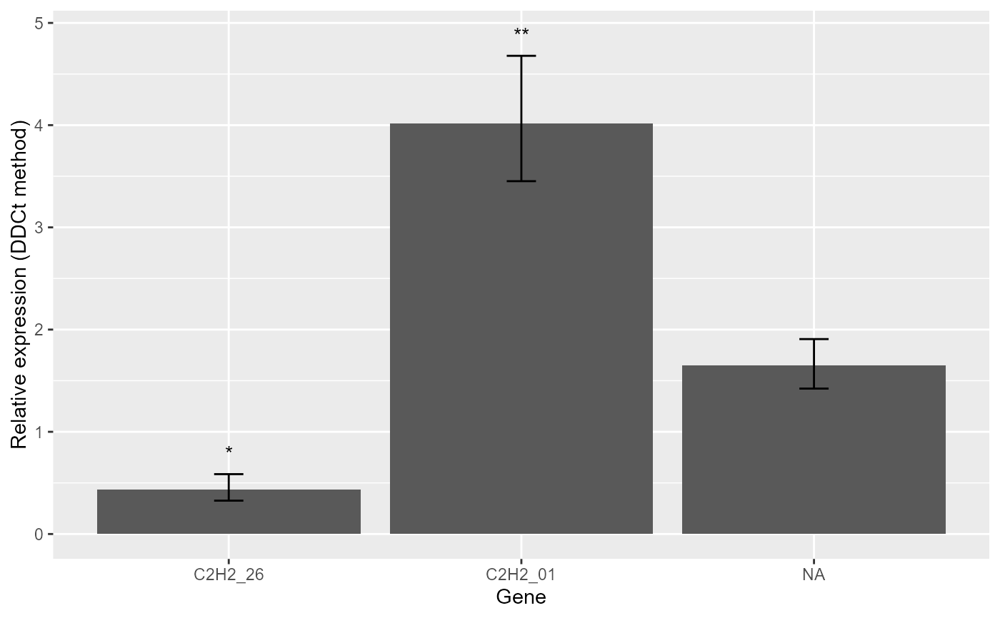
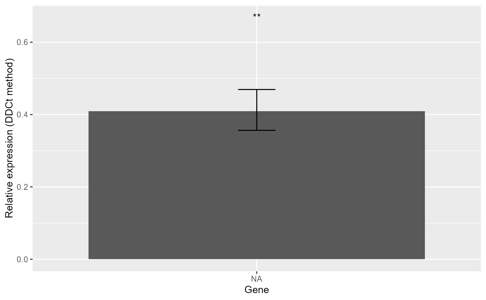
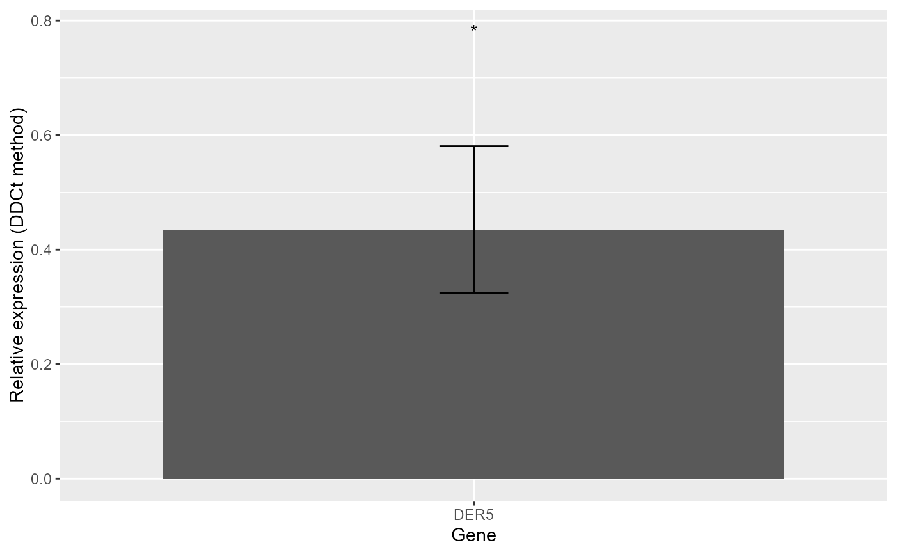

The TTEST_DDCt function performs fold change expression analysis based on
the \(\Delta \Delta C_T\) method using Student's t-test. It supports analysis
of one or more target genes evaluated under two experimental conditions
(e.g. control vs treatment).
Usage
TTEST_DDCt(
x,
numberOfrefGenes,
Factor.level.order = NULL,
paired = FALSE,
var.equal = TRUE,
p.adj = "none",
order = "none",
plotType = "RE"
)Arguments
- x
A data frame containing experimental conditions, biological replicates, and amplification efficiency and Ct values for target and reference genes. The number of biological replicates must be equal across genes. If this is not true, or there are
NAvalues useANODA_DDCtfunction for independent samples orREPEATED_DDCtfor paired samples. See the package vignette for details on the required data structure.- numberOfrefGenes
Integer specifying the number of reference genes used for normalization.
- Factor.level.order
Optional character vector specifying the order of factor levels. If
NULL, the first level of the factor column is used as the calibrator.- paired
Logical; if
TRUE, a paired t-test is performed.- var.equal
Logical; if
TRUE, equal variances are assumed and a pooled variance estimate is used. Otherwise, Welch's t-test is applied.- p.adj
Method for p-value adjustment. One of
"holm","hochberg","hommel","bonferroni","BH","BY","fdr", or"none". Seep.adjust.- order
Optional character vector specifying the order of genes in the output plot.
- plotType
Plot scale to use:
"RE"for relative expression or"log2FC"for log2 fold change.
Value
A list with the following components:
- Result
Table containing RE values, log2FC, p-values, significance codes, confidence intervals, standard errors, and lower/upper SE limits.
- RE_Plot
Bar plot of relative expression values.
- log2FC_Plot
Bar plot of log2 fold change values.
Details
Relative expression values are computed using one or more reference genes for normalization. Both paired and unpaired experimental designs are supported.
Paired samples in quantitative PCR refer to measurements collected from the same individuals under two different conditions (e.g. before vs after treatment), whereas unpaired samples originate from different individuals in each condition. Paired designs allow within-individual comparisons and typically reduce inter-individual variability.
The function returns numerical summaries as well as bar plots based on either relative expression (RE) or log2 fold change (log2FC).
References
Livak, K. J. and Schmittgen, T. D. (2001). Analysis of Relative Gene Expression Data Using Real-Time Quantitative PCR and the Double Delta CT Method. Methods, 25(4), 402–408. doi:10.1006/meth.2001.1262
Ganger, M. T., Dietz, G. D., and Ewing, S. J. (2017). A common base method for analysis of qPCR data and the application of simple blocking in qPCR experiments. BMC Bioinformatics, 18, 1–11.
Yuan, J. S., Reed, A., Chen, F., and Stewart, N. (2006). Statistical Analysis of Real-Time PCR Data. BMC Bioinformatics, 7, 85.
Examples
# Example data structure
data1 <- read.csv(system.file("extdata", "data_1factor_one_ref.csv", package = "rtpcr"))
# Unpaired t-test
TTEST_DDCt(
data1,
paired = FALSE,
var.equal = TRUE,
numberOfrefGenes = 1)
#> *** 3 target(s) using 1 reference gene(s) was analysed!
#> *** The control level was used as calibrator.
#> $Result
#> Gene RE LCL UCL pvalue se log2FC Lower.se.RE Upper.se.RE
#> 1 C2H2_26 0.4373 0.1926 0.9927 0.0488 0.4218 -1.1933 0.3264 0.5858
#> 2 C2H2_01 4.0185 2.4598 6.5649 0.0014 0.2193 2.0067 3.4518 4.6783
#> 3 C2H2_12 1.6472 0.9595 2.8279 0.0624 0.2113 0.7200 1.4228 1.9069
#> sig Lower.se.log2FC Upper.se.log2FC
#> 1 * -1.5985 -0.8908
#> 2 ** 1.7237 2.3361
#> 3 0.6219 0.8335
#>
#> $plot

#>
# With amplification efficiencies
data2 <- read.csv(system.file("extdata", "data_1factor_one_ref_Eff.csv", package = "rtpcr"))
TTEST_DDCt(
data2,
paired = FALSE,
var.equal = TRUE,
numberOfrefGenes = 1)
#> *** 1 target(s) using 1 reference gene(s) was analysed!
#> *** The control level was used as calibrator.
#> $Result
#> Gene RE LCL UCL pvalue se log2FC Lower.se.RE Upper.se.RE sig
#> 1 target 0.409 0.2388 0.7006 0.0099 0.1985 -1.2897 0.3565 0.4694 **
#> Lower.se.log2FC Upper.se.log2FC
#> 1 -1.48 -1.124
#>
#> $plot

#>
# Two reference genes
data3 <- read.csv(system.file("extdata", "data_1factor_Two_ref.csv", package = "rtpcr"))
TTEST_DDCt(
data3,
numberOfrefGenes = 2,
var.equal = TRUE,
p.adj = "BH")
#> *** 1 target(s) using 2 reference gene(s) was analysed!
#> *** The control level was used as calibrator.
#> $Result
#> Gene RE LCL UCL pvalue se log2FC Lower.se.RE Upper.se.RE sig
#> 1 DER5 0.4341 0.1915 0.9839 0.0473 0.4204 -1.2039 0.3244 0.581 *
#> Lower.se.log2FC Upper.se.log2FC
#> 1 -1.6111 -0.8996
#>
#> $plot

#>